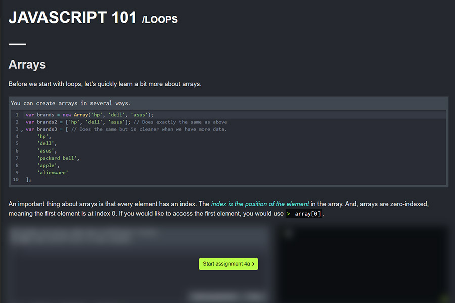
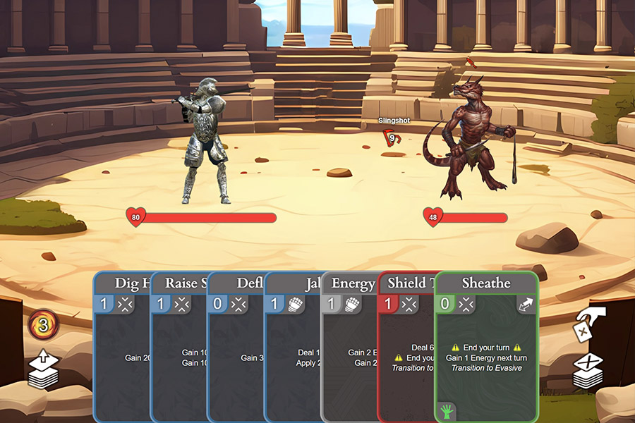
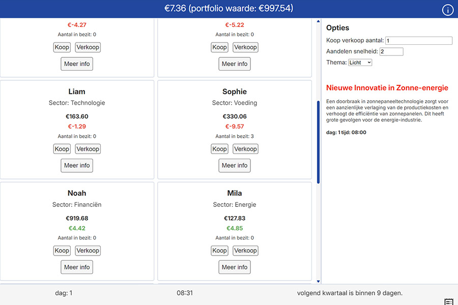
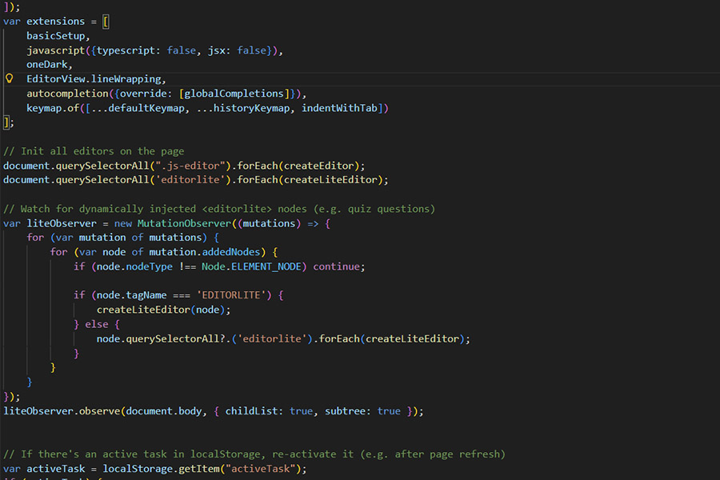

BINF: Bedrijfsondersteunende Informaticawetenschappen
De IT-richting voor wie verder wil studeren in het economie- of programmeerveld
De IT-richting voor wie verder wil studeren in het economie- of programmeerveld
BINF is voornamelijk een theoretische richting waarbij je een brede algemene vorming krijgt. Je combineert informatica met inzicht in de bedrijfswereld. Je werkt vaak projectmatig en leert samenwerken aan realistische opdrachten.
Tijdens de lesuren informatica leer je voornamelijk programmeren en werken met databanken, maar je ontdekt ook hoe technologie bedrijven ondersteunt in hun dagelijkse werking. Zo bouw je niet alleen technische kennis op, maar ontwikkel je ook vaardigheden die in bijna elke sector van pas komen.
Ben jij geïnteresseerd in technologie, computers, economie én de manier waarop bedrijven werken? Wil je leren hoe digitale toepassingen organisaties slimmer, sneller en efficiënter maken? Kan je goed zelfstandig werken? Dan is BINF precies de richting die bij jou past!
Je hoeft geen computerexpert te zijn om te starten. Maar, interesse, nieuwsgierigheid en een flinke portie motivatie zijn essentieel.

Ontdek alles over onze opleidingen en ontmoet onze leerkrachten en studenten. Misschien kan je al eens proeven van wat we te bieden hebben?
Zaterdag 30 Mei - 13u30 - 17u30
Begijnhoflaan 1, 9200 Dendermonde
Tel: 052 25 88 10
Ps: Je kan je altijd inschrijven op onze school. Wees er snel bij en verzeker je plaats!
We werken regelmatig aan meerwekelijkse projecten en organiseren diverse activiteiten om je vaardigheden te ontwikkelen.

Leerlingen krijgen de kans om hun creativiteit en programmeervaardigheden te ontwikkelen door het maken van spelletjes. Ze leren hoe ze concepten kunnen omzetten in interactieve ervaringen.

We maken applicaties met verschillende programmeertalen en technologieën, waarbij we zowel web-, native-Native: Apps op besturingssystemen zoals Windows als mobiele toepassingen ontwikkelen.

Leerlingen leren hoe ze professioneel kunnen programmeren, met aandacht voor best practices, codekwaliteit en samenwerking in teamprojecten. We garanderen je dat je goed voorbereid bent op verdere studies die het je een pak makkelijker zullen maken.
Nadat je afgestudeerd bent in BINF heb je een stevige basis gelegd voor zowel hogere studies als een carrière in de IT- en bedrijfswereld.
Aangezien BINF eerder een voorbereidend karakter heeft, zijn de directe jobmogelijkheden beperkt. Veel afgestudeerden kiezen er vanzelfsprekend voor om verder te studeren. Desondanks kunnen enkele afgestudeerden aan de slag als:
Veel van onze afgestudeerden kiezen ervoor om verder te studeren in een professionele of academische bachelor, zoals:

De leerkrachten zijn behulpzaam en je krijgt de vrijheid om zelfstandig te leren... Ferre (APDA '23-24)

Wat zijn je favoriete herinneringen aan je tijd bij GO! Talent?
De stage in malta is 1 van mijn favoriete herinneringen. Het is de eerste keer dat je meedraait in een werkfunctie in een ander land. Zeer unieke ervaring en dit maakt het ook zo onvergetelijk.
De pauzes waar je praat met je vrienden waren altijd leuk en fijn om op terug te denken.
Wat is je favoriete project dat je tijdens je opleiding hebt gedaan?
Mijn favoriete project was websites maken en designen. Dit was meer dan 1 project maar ze vallen allemaal onder dezelfde categorie. Ze waren heel moeilijk en namen veel tijd in beslag maar het was altijd leuk wanneer iets werkte na lang te sukkelen.
Welke vaardigheden heb je geleerd die je nu nog steeds gebruikt?
Het meeste dat ik geleerd heb uit mijn IT vakken gebruik ik nu nog steeds op de hoge school en in het werkveld. Ook probeer ik in mijn vrije tijd nog te coderen.
Heb je tips voor toekomstige studenten?
De meeste leerkrachten doen hun best om iedereen te helpen maar soms heeft dat wat tijd nodig. Goede communicatie en geduld is dus belangrijk. Als er iets is praat je er best over met 1 van de docenten of leerlingbegeleiders.
Zou je GO! Talent aanraden aan anderen? Waarom of waarom niet?
Als je een IT richting gaat doen in GO! Talent kan ik dit zeker aanraden. In deze richting vind je alle coole leerkrachten zoals Mr. Van Oudenhove, Mr. Fiers, en Mw. Matthys (en voorheen ook Mr. Van Maelsaeke).
Ferre (INFO '23-24)| Vak | Uren 5e | Uren 6e |
|---|---|---|
| Bedrijfswetenschappen | 2 | 1 |
| Communicatiewetenschappen | 1 | 1 |
| Databases | 1 | 1 |
| Economie | 1 | 1 |
| Programmeren (PHP, JS, Node,..) | 0 | 5 |
| Softwareontwikkeling | 2 | 0 |
| Webtechnieken + basic JavaScript | 3 | 0 |
| Wiskunde | 1 | 2 |
| Opleiding Hogeschool Gent | 0 | 2 |
| Totaal | 11 | 13 |
| Vak | Uren 5e | Uren 6e |
|---|---|---|
| Aardrijkskunde | 1 | 1 |
| Artistieke expressie | 0 | 1 |
| Burgerschap/Geschiedenis | 2 | 2 |
| Economie | 1 | 0 |
| Engels | 2 | 2 |
| Frans | 2 | 2 |
| Levensbeschouwing | 2 | 2 |
| Lichamelijke Opvoeding | 2 | 2 |
| Natuurwetenschappen | 1 | 1 |
| Nederlands | 4 | 3 |
| Talentcoach | 1 | 1 |
| Wiskunde | 3 | 2 |
| Totaal | 21 | 19 |